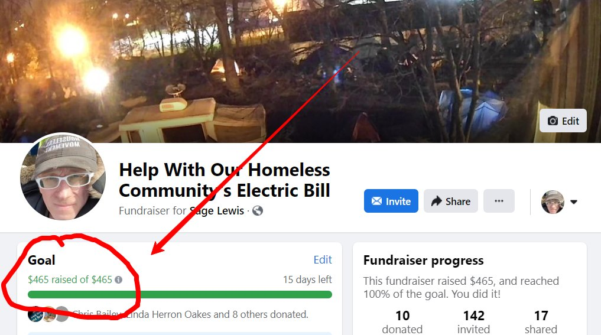

Timeline photos
Do you know how many times you have done this? How many times you have helped our homeless neighbors? (I honestly can't count the number of times.) You met this goal in less than 6 hours.
I need you to know 2 things:
It's YOU that keeps me going. It's YOUR endless kindness and forgiveness and compassion that make me feel a kind of way that I can't even really express. It's like you take my breath away. Like your kindness makes it hard to catch my breath. I won't stop fighting because you deserve someone who won't stop fighting. You deserve a better world. You deserve better leaders. You are unimaginably good.
The other thing I desperately want you to know is this: HOPE IS REAL. HOPE CHANGES THE WORLD. Don't be afraid to have hope in your fellow humans. I've seen your goodness in unimaginably awe inspiring ways. Over and over and over again.
The goodness is the truth. We only are forced to look at the badness because it is how they control us.
Believe in yourself. Believe in your neighbor. You are true and just and kind.